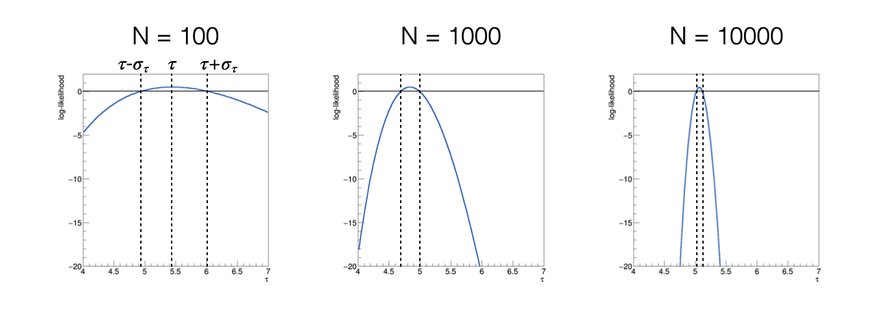

10. Parameter Estimate using the Maximum Likelihood Method#
10.1. Parameter Determination#
Often, the goal of an experiment is the estimation of parameters of a model.
To achieve this result, a dataset \(x_i\) is collected and used as input to algorithms called estimators, which estimate the parameters of interest.
The estimates produced by an estimator are random variables because estimators are functions of random numbers (the data).
They have their own probability distribution.
There are libraries that perform this task for us. Among them,
iminuitcontains various algorithms for this purpose. In jargon, the parameter determination operation is called fitting.
10.2. Maximum Likelihood#
The technique of maximum likelihood is based on the assumption that the estimate of the sought-after parameters corresponds to the value that maximizes the likelihood, defined as the product of the value of the probability density distribution calculated for each measurement:
\[ \mathcal{L}(\theta)= \mathcal{L}(\theta, x)= f(x_1,\theta) \times \ldots \times f(x_N,\theta) = \prod_{i=1}^{N} f(x_{i},\theta) \]
The likelihood is a function of both the measurements and the parameters, but we emphasize the dependence on the parameters because the data are fixed for finite measurements.
The function that estimates the parameters is obtained from the equation:
\[ \frac{\partial \mathcal{L}(\theta)}{\partial\;\theta} = 0 \]
10.3. Logarithm of the Likelihood#
Usually, the logarithm of the likelihood function is used, indicated with a lowercase italic letter:
In fact, since the logarithm is a monotonically increasing function, the extrema of a function and its logarithm are found at the same point.
The logarithm of a product of terms is equal to the sum of the logarithms of the individual terms. Therefore, taking the derivative of the logarithm of the likelihood function is simpler than taking the derivative of the likelihood function:
\[ \frac{\partial l(\theta)}{\partial\theta} = \frac{\partial\log(\mathcal{L}(\theta))}{\partial\theta} = \frac{\partial\log\left(\prod_{i=1}^N f(x_i,\theta)\right)}{\partial\theta} = \sum_{i=1}^N \frac{\partial\log\left(f(x_i,\theta)\right)}{\partial\theta} \]
10.4. Uncertainty of the Parameter Estimate#
It is known that there is a graphical method for determining the sigma associated with the parameters estimated using the maximum likelihood method.
This involves finding the points of intersection between the log-likelihood function and the horizontal line with a coordinate equal to the maximum of log-likelihood - 0.5 and calculating their half-distance.
Why \(-0.5\)?
To demonstrate that the points corresponding to \(x\pm\sigma\) can be obtained under the condition \(l(\theta) = l(\theta)^{\text{max}} - 0.5\), expand the function \(l(\theta)\) in a Taylor series around the estimator of the expected value \(\hat{\theta}\), approximate the expected value of the second derivative of \(\ell(\theta)\) with its value at the maximum, and substitute it with the variance of the estimator, applying the Rao-Cramér theorem.
10.5. Properties of the Maximum Likelihood Parameter Estimates#
They are consistent
They are asymptotically unbiased, meaning they have zero bias as the number of measurements N tends to infinity
They are asymptotically efficient, implying they have the minimum possible variance for the number of measurements N tending to infinity
10.6. Building a Likelihood and Determining a Parameter#
We will use the example of the exponential distribution to determine its sole parameter τ using the maximum likelihood method:
\[ f(x,\tau) = \frac{1}{\tau}e^{-\frac{x}{\tau}} \]
It is analytically proven that the arithmetic mean of the data is an estimator of the parameter τ,
In this case, we want to construct a numerical estimator of the parameter, as an example of a general case where analytical calculation is not feasible.
10.6.1. Finding the Maximum of the Logarithm of the Likelihood#
The golden ratio algorithm developed during Lecture 6 can be used to find the maximum of the log-likelihood:
def sezioneAureaMax_LL ( g, # funzione di likelihood trovare il massimo pdf, # probability density function of the events sample, # sample of the events x0, # estremo dell'intervallo x1, # altro estremo dell'intervallo prec = 0.0001): # precisione della funzione
The program should be written to find the maximum of a function
The input parameters are
the function to find the extremum of (
g),the single measurement probability density function (
pdf),the interval to search for the maximum for the parameter τ,
the list containing the data,
and the precision at which to stop the calculation, with a default value.
10.6.2. Coding Example#
After generating pseudo-random numbers distributed according to an exponential probability density, which can be visualized with a histogram, the developed functions can be used starting from a reasonably chosen interval to search for the maximum
The result of this algorithm can be compared with the arithmetic mean of the numbers, which for this particular probability distribution is an estimator of τ
10.7. Uncertainty of the \(\tau\) Estimate#
The estimator of τ is a random variable, meaning it has its own probability distribution
Therefore, in addition to having a point estimate obtained by maximizing the logarithm of the likelihood, it also has a sigma
A graphical method is often used to determine this sigma, based on the fact that the likelihood is asymptotically a Gaussian function with respect to the parameter, so the log-likelihood function is parabolic
It is demonstrated that the two points τ - στ and τ + στ are found by nullifying the following function:
\[ h(\tau) = \ell(\tau) - \ell(\tau_{\textrm{max}}) + \frac{1}{2} \]
10.7.1. Visualizing the Likelihood#
Plotting the function h(τ) results in the following outcome, when varying the number of events used to calculate the log-likelihood function: 
As the number of used events increases, the function h(τ) becomes narrower, meaning the sigma of the estimator decreases
As the number of used events increases, the function h(τ) becomes more symmetric, indicating its asymptotic behavior
10.7.2. Finding the Intersection Points#
The bisection method can be used to find τ - στ and τ + στ
def intersect_LLR ( g, # funzione di cui trovare lo zero pdf, # probability density function of the events sample, # sample of the events xMin, # minimo dell'intervallo xMax, # massimo dell'intervallo ylevel, # value of the horizontal intersection theta_hat, # maximum of the likelihood prec = 0.0001): # precisione della funzione ''' Funzione che calcola zeri con il metodo della bisezione ''' def gprime (x) : return g (x, pdf, sample, theta_hat) - ylevel xAve = xMin while ((xMax - xMin) > prec) : xAve = 0.5 * (xMax + xMin) if (gprime (xAve) * gprime (xMin) > 0.) : xMin = xAve else : xMax = xAve return xAve
10.8. Use in the Main Program#
Within a relatively narrow interval around the maximum of the log-likelihood function, it is known that the function h(τ) has two zeros, one to the right and one to the left of its maximum
By invoking the
bisectionfunction twice, the desired points can be calculated:from likelihood import sezioneAureaMax_LL, intersect_LLR # ... tau_hat = sezioneAureaMax_LL (loglikelihood, exp_pdf, sample, 0.5, 5., 0.0001) tau_hat_minusS = intersect_LLR (loglikelihood_ratio, exp_pdf, sample, 0.5, tau_hat, -0.5, tau_hat) tau_hat_plusS = intersect_LLR (loglikelihood_ratio, exp_pdf, sample, tau_hat, 5., -0.5, tau_hat)
The interval between the two intersection points
tau_hat_minusSandtau_hat_plusSis the confidence interval associated with the obtained estimator
10.8.1. Comparison to the Analytical Estimate#
In the case of the exponential distribution, it is known that the variance is the square of the mean
The uncertainty on the mean is the square root of the variance, divided by the square root of the number of events
Thus, the uncertainty on the estimator of τ, denoted with a circumflex accent, can be estimated in this case as:
\[ \sigma_{\tau} = \frac{\sigma}{\sqrt {N}} = \frac{\tau}{\sqrt {N}} \]
Therefore, the value obtained from the graphical method can be compared with the one calculated from the arithmetic mean.
10.9. Probability Distribution of the Estimators#
The probability distribution of estimators can be reconstructed in a frequentist manner, simulating the experiment of collecting events many times, using the toy experiment technique
To generate a toy experiment, the true value of the parameter (
mu_truein the present case) and the number of collected events (number_events) need to be hypothesizedTo construct the distribution of the estimator of τ, two procedures need to be repeated many times (
N_toys):Generation of a toy experiment
Calculation of the estimator given that generation, as if they were the measured events
10.9.1. Generating a Toy Experiment#
To generate a toy experiment, pseudo-random numbers are usually used, employing existing algorithms adapted to the case at hand
To generate pseudo-random numbers according to an exponential distribution, the technique of the inverse of the cumulative function can be used:
from myrand import generate_exp # ... singleToy = generate_exp (tau_true, sample_size)
The function takes the true value of τ as input and returns a list of pseudo-random numbers distributed according to the corresponding exponential probability distribution
10.9.2. Finding the Parameter with the Maximum Likelihood#
The maximum likelihood method can be applied as developed earlier, obtaining a result for each toy experiment
tau_hats = [] for iToy in range (N_toys) : singleToy = generate_exp (tau_true, N_evt) tau_hat_toy = sezioneAureaMax_LL (loglikelihood, exp_pdf, singleToy, 0.5, 5., 0.0001) tau_hats.append (tau_hat_toy)
10.9.3. Exercise Results#
Both steps are incorporated into a general loop, where an histogram (or other statistical tools) can be populated
The result clearly shows the evolution of the probability distribution of the estimator as the number of available measurements increases:

Note
The exercises for the lecture can be found here
Note
Vogliamo aggiungere un esercizio di overfitting per mostrare che anche un chi2 vicino a 0 può essere un problema?```